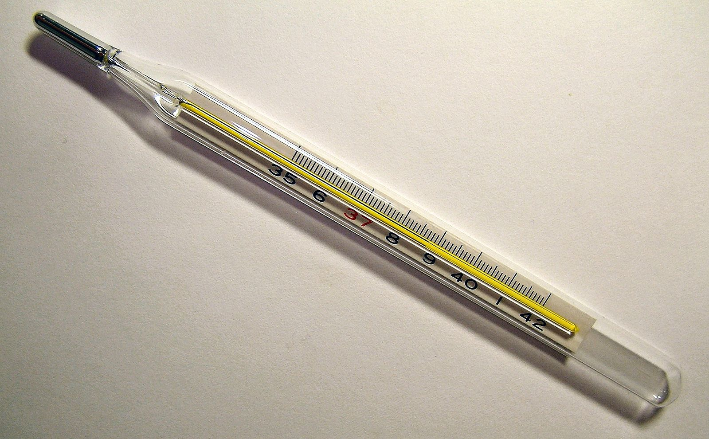
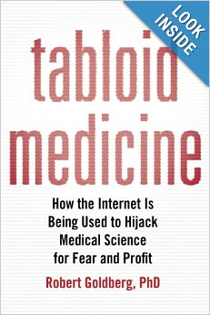
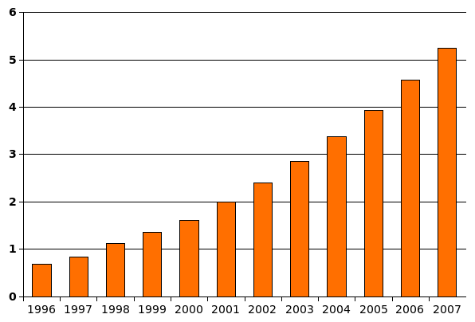
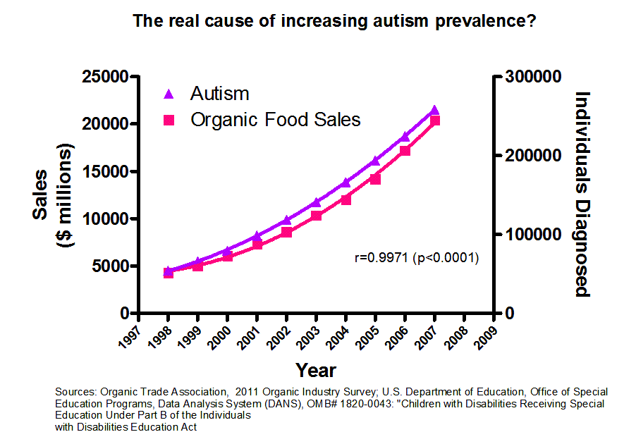

Vacunas
Mi hija menor tenía alrededor de un año de edad cuando cogió un termómetro, lo mordió, y se tragó el contenido. Fue un lamentable descuido nuestro el que dejó ese peligroso objeto a su alcance.
Por fortuna mi mujer detectó esta situación de inmediato, me llamó al trabajo y acudimos lo más rápido posible a ver a su pediatra. El médico ordenó unas radiografías en las que se observaban como las bolitas del metal recorrían su tracto intestinal. Estábamos muy asustados y el doctor desconcertado, pues no tenía claro qué hacer en este caso.

El mercurio es tóxico, aunque esto es algo que no se supo por largo tiempo. Se dice que el emperador chino, que construyó la Gran Muralla, en su aspiración por tener la vida eterna, consumía pequeñas cantidades de este elemento y que fue esta dieta la que le llevó a la muerte antes de cumplir cincuenta años. Entre los antiguos alquimistas se le consideraba un elemento curativo y con propiedades místicas.
A los 40 grados Celsius el mercurio ya empieza a evaporarse. Es fácil notar el efecto de dilatación del metal ante la temperatura en los termómetros, y es por esta propiedad que se le usa en estos instrumentos.
En forma de vapor es altamente nocivo. De hecho, si los vapores de mercurio llegan al cerebro pueden causar serios daños neurológicos. Además la exposición prolongada provoca pérdida de apetito, fatiga, insomnio, cambios en el comportamiento, e incluso en la personalidad. Además del cerebro, puede dañar los riñones, y pulmones. El daño es mayor en los niños pequeños. Estamos hablando de grandes cantidades de mercurio, o de exposición permanente y prolongada.
Su manipulación esta regulada en muchos países del mundo. Los dentistas, por ejemplo, solían usar mucho mercurio en las amalgamas, lo que se ha prohibido en muchos países, y la OMS ha recomendado desde 2009 su eliminación gradual a nivel mundial. Hoy en día se prefiere el uso de materiales cerámicos menos tóxicos. Por cierto, la cantidad de mercurio contenida una amalgama es miles de veces la que existe en una vacuna con timerosal.
Pero volvamos a mi hija, el tratamiento para deshacernos del mercurio en su cuerpo consistió en acelerar la expulsión del metal de su cuerpo. El pediatra nos recomendó ciertos alimentos y suplementos de fibra para lograr que expulsara el tóxico. Estábamos atentos y angustiados, hasta que un día bolitas plateadas aparecieron en un cagado pañal :smile:, y volvió la tranquilidad.
¡Qué alivio más grande! No saben lo que sufren los padres por cualquier cosa que le sucede a su pequeña.
¿Fue expulsado todo el mercurio de su sistema? Es poco probable, la radiografía mostraba una gran cantidad de bolitas, y es casi seguro que algo del contenido del termómetro fue absorbido por el cuerpo de mi hija.
Pero ella se ha desarrollado con toda normalidad en estos doce años. El otro día participó en el taller de verano de Santiago Makerspace y aprendió como hacer cortos animados con stop motion. A sus doce años nunca ha presentado ningún problema a nivel neuronal.
¿Autismo? Nada. Yo soy más autista que ella ;). Mi hija es una niña tranquila, pero muy sociable, sale a andar en bicicleta, baila, canta, lee, inventa cosas, dibuja muy bien, tiene dotes para representar, y es la hija más dulce que un padre puede tener.
Menciono esto, porque aparte de estar orgulloso, tengo que comentarles que además fue inoculada con vacunas preservadas con timerosal, de acuerdo a los programas de salud de nuestro país. Como muchos niños, miles, o millones en el mundo. Como yo mismo, y probablemente tú también amigo lector.
¿A cuanto mercurio estuvo expuesta mi hija?
Para que hagamos comparaciones:
Un termómetro estándar tiene unos 700 miligramos de mercurio, en 0.005 mililitros de volumen a temperatura ambiente.
Una vacuna con timerosal puede tener entre 10 a 50 microgramos de esta sustancia (que es un compuesto orgánico de mercurio).
700 miligramos de mercurio, la cantidad que tragó mi hija, corresponde a 700,000 microgramos de mercurio. Es decir, ¡mi hija se tragó una porción entre 14.000 a 70.000 veces lo contenido en una vacuna con timerosal! (En realidad más, porque el timerosal es un compuesto de mercurio, no mercurio puro).
¿Ustedes le inyectarían al intestino de su hija 14.000 veces la cantidad de mercurio que tiene una vacuna? Yo no.
OK, ella expulsó gran parte de lo que tragó, pero ¿cuantos miligramos quedaron en su cuerpo? Recuerden que ella recibió además las vacunas estándares de todos los niños de su edad.
Tuvieron suerte, me van a decir. “¡Agradece a Dios!”, me dijeron una vez. Y en parte tienen razón, que bueno que mi hija expulsó gran parte del mercurio, pero si creyera toda la teoría que relaciona el autismo con el timerosal, debería estar desconcertado, o creer que ella es la excepción que confirma la regla.
Ojo, no estoy diciendo que un sólo caso demuestre que no hay correlación entre timerosal y autismo, así que les pido que sigan leyendo con calma.
Fue por este incidente con mi hija que me puse a investigar sobre el mercurio y el autismo. Así que llevo once, de los doce años de edad de mi hija, leyendo algo de las supuesta conexiones entre el mercurio y el autismo.
No crean que no me preocupé, claro que lo hice. En 2002 esto ya era tema. En 2000 hubo miles de demandas relacionadas con el uso de timerosal en las vacunas. En la época que le pasó el accidente a mi hija esto ya era conocido, y discutido en internet, aunque también había sido refutado, en 1999.
Pero el mito de que el timerosal causa autismo persiste. En 2011 en “The Annals of Pharmacotherapy” se publicó lo siguiente:
En 1998, el Dr. Andrew Wakefield, un gastroenterólogo británico, describió un nuevo fenotipo de autismo llamado “regressive autism-enterocolitis syndrome” (¿sindrome de enterocolitis autista regresiva?) gatillado por factores ambientales, como las vacunas contra la sarampión, paperas y la rubéola. La conexión especulativa entre vacunas y autismo disminuyó la confianza parental en los programas de salud pública de vacunación y creó una crisis de salud en Inglaterra e interrogantes sobre la seguridad de las vacunas en Norte América. Después de 10 años de controversia e investigación, el Dr. Wakefield fue encontrado culpable de mala conducta ética, médica y científica por la publicación de su artículo sobre autismo. Estudios adicionales mostraron que los datos presentados fueron fraudulentos. La supuesta conexión autismo-vacunas es, quizás, el engaño médico más dañino de los últimos 100 años.1
“El engaño médico más dañino de los últimos 100 años”.
Y el 15 de enero los diputados de mi país aprobaron una ley basada en este mismo engaño. Una ley que prohibe el uso de timerosal en las vacunas.
Pero, ¿qué es el timerosal?
Es un compuesto orgánico que contiene mercurio. Es un agente antiséptico y antifúngico. Ha sido usado como preservante de vacunas desde 1930. Su uso se aprobó después de un incidente en 1928, en que 12 de 21 niños murieron al ser vacunados contra la difteria. Las vacunas estaban infectadas con la bacteria estafilococo, debido a la mala calidad de los preservantes usados en ese tiempo.
En aquella época se eligió el timerosal como preservante de vacunas porque, a diferencias de otros compuestos usados en ese tiempo, éste no reducía la potencia de la vacuna.
Así que al timerosal le debemos la vida casi todos nosotros, que fuimos vacunados desde 1930 hasta ahora. De lo contrario, las vacunas habrían sido las principales armas asesinas de niños de todos lo tiempos.
La polémica por el timerosal aparece después de que se publica el artículo de Wakefield y también una especulación de Redwood y Bernard2 basada en la similitud del envenenamiento por mercurio con los síntomas de ciertas formas de autismo. Una y otra vez se ha probado que el timerosal es inocuo si se usa en las dosis correctas.
En 2007, la editorial del New England Journal of Medicine dice lo siguiente:
La idea de que el timerosal causó el autismo ha dado lugar al desarrollo de una industria casera de charlatanes que ofrecen falsas esperanzas, en parte en la forma de agentes quelantes de mercurio. En agosto de 2005, un niño autista de 5 años falleció de una arritmia causada por la inyección del agente quelante EDTA (ácido etilendiaminotetraacético). A pesar de que la noción de que el timerosal causa el autismo ya ha sido descartada por bastantes excelentes estudios epidemiológicos, alrededor de 10.000 niños autistas en Estados Unidos reciben quelantes de mercurio cada año.
Lo terrible de toda esta idea de que el timerosal causa autismo, es que los papás están envenenando a sus hijos con quelantes peligrosos, como el EDTA, que puede dañar los riñones. ¡Todo por la ignorancia provocada por esta horrible y estúpida teoría!
También este temor ha sido usado por charlatanes seudocientíficos para esparcir sus ideas y profitar engañando a angustiados padres. Como lo denuncia Robert Goldberg en su libro “Tabloid Medicine - How the Internet is Being Used to Hijack Medical Science for Fear and Profit”.

Así como la certeza del cambio climático está sostenida por la publicación de miles de artículos científicos, la evidencia que descarta la relación entre vacunas y autismo está respaldada por más de 1.000 artículos científicos.
Como el estudio de John R. Hughes, “A review of recent reports on autism: 1000 studies published in 2007” que pueden leer desde este enlace en el sitio DesafiandoAlAutismo.org.
Voy a aprovechar de citar a ese sitio, que contiene información de orientación para padres y personas interesadas en este síndrome:
Se ha argumentado que la vacuna contra sarampión, paperas, rubéola (MMR) o timerosal (un conservante que contiene mercurio utilizado en algunas vacunas), o ambos, fueron los responsables para una epidemia de autismo. Por lo que se refiere a MMR, la investigación epidemiológica ha sido consistentemente negativa con respecto a que la demanda (Rutter, 2008), siendo decisivas las pruebas en Japón que cuando MMR fue totalmente retirada, no hubo ningún efecto sobre el aumento general de la tasa de diagnóstico de autismo (Honda et al. 2005). La situación con respecto al timerosal es un poco más complicada en que no hay duda de que el mercurio es una neurotoxina comprobada. Sin embargo, los mismos tipos de investigaciones epidemiológicas tampoco han podido afirmar que esto haya dado lugar a una epidemia de autismo. En particular, la retirada de timerosal en las vacunas de todo Escandinavia, en un momento en que se continuaba su uso en el resto del mundo, ofrece pruebas convincentes en contra de la ‘Epidemia’3.
Resumiendo, por un tiempo se planteó como hipótesis que las vacunas MMR o el timerosal provocaron una epidemia de autismo, pero, al retirar este compuesto en ciertos países, no varió la tasa de aumento del autismo, todo siguió igual, en Dinamarca, Suecia, Noruega, Islandia y Japón. La supuesta epidemia no desapareció al sacar el compuesto de circulación.
Por cierto, nos estamos sumando a estos países. ¡Que bueno!, dirán algunos. Lo divertido es que el diputado Juan Luis Castro se vanaglorió de esta “hazaña” y lo mostró como una gran innovación de nuestro país, lo siento diputado, los países escandinavos y Japón lo hicieron antes, sin tanta parafernalia4.
Pero no es tan bueno, como parece, porque reemplazar el timerosal aumenta los costos de los planes de vacunación hasta 6 ó 7 veces. En 2009, el gobierno norteamericano decidió promover la vacunación masiva para prevenir el H1N1, o gripe porcina, se requerían unos 120 millones de dosis, pero se decidió que no se usara como preservante el timerosal. Esta decisión provocó que sólo se pudieran adquirir 16 millones de dosis. (Bueno, en todo caso, sabemos que el H1N1 no fue tan catastrófico como se sospechaba, de hecho, la gripe común sigue matando más gente).
Chile ha decidido, por ley, despilfarrar 6 veces más dinero de los programas de vacunación, todo basado en un mito, especulaciones seudo científicas y engaños descarados de médicos que fueron condenados.
Pero nuestros legisladores dicen que esto fue una decisión seria, informada, e incluso innovadora. ¡Vacunas!
PS:
Acá hay un argumento más divertido (en contra de la idea de que no se vacune a los niños):
Miren esta gráfica, que muestra el crecimiento de la cantidad de niños con autismo por cada 1.000 niños, desde 1996 a 2007 (época de la supuesta epidemia) en los Estados Unidos:

Compárenla con esta gráfica, que muestra una correlación entre autismo y la venta de comida orgánica

¿Acaso esta gráfica demuestra que el aumento de alimentos orgánicos causa autismo?5
Por supuesto que no, correlación no implica causalidad. Y sin embargo este es el argumento de los que relacionan timerosal con autismo.
Sobre el principio de precaución.
Tomado de Wikipedia:
“El principio de precaución o principio precautorio es un concepto que respalda la adopción de medidas protectoras ante las sospechas fundadas de que ciertos productos o tecnologías crean un riesgo grave para la salud pública o el medio ambiente, pero sin que se cuente todavía con una prueba científica definitiva de tal riesgo”.
Este principio ha sido argumentado a favor de dejar de usar las vacunas.
Este principio me recuerda mucho la discusión que tuvimos sobre “la píldora del día después”, porque se planteaba que esta píldora podría ser abortiva, y ante esto, y en base al principio de precautorio, debió haberse prohibido la distribución de este anticonceptivo.
Otro problema es que olvidan que este principio debe ir acompañado de un análisis de costos y beneficios. Nos puede pasar lo mismo que en Estados Unidos con el suministro de vacunas. También podría generarse la sospecha de a quien beneficia esta medida, se podría levantar la sospecha de que quienes venden las otras vacunas sin timerosal están contentas con esta medida. Pero, me preocupa más que estemos malgastando recursos en base a este principio, siendo que el grado de incerteza es demasiado bajo, hasta sospecho que es más bajo que en el caso de “la píldora del día después”.
Causas del autismo.
En la actualidad la ciencia no tiene certeza absoluta sobre las causas del autismo. Es un síndrome de amplio espectro, presentándose de diversas formas. La causa más probable tendría relación con la genética. Pueden leer algo al respecto, aunque es un artículo de 2011, en “Progresos en la comprensión del autismo” en el sitio Desafiando al autismo.
Uno de los últimos libros que contiene información actualizada sobre el espectro autista fue publicado por Temple Grandin en su libro “The Autistic Brain: Thinking Across the Spectrum”. Lo notable es que Temple Grandin es autista, y aprendió a hablar a los cinco años y llegó a obtener un Phd en ciencia animal. Ella publicó su auto biografía, “Thinking in Pictures, My Life with Autism”, de la que incluso se hizo una película.
Notas
-
Tomado del sitio de The Annals of Pharmacotherapy, “The Vaccine-Autism Connection: A Public Health Crisis Caused by Unethical Medical Practices and Fraudulent Science” http://aop.sagepub.com/content/45/10/1302 ↩︎
-
Autism: a novel form of mercury poisoning. Hipótesis médica de 2001. Disponible en la US National Library of Medicine. Este texto ha sido refutado, por cierto. Una refutación se lee en el libro “Tabloid Medicine. How the Internet is being used to hijack Medical Science for Fear and Profit”, publicado por Robert Goldberg, Phd. Disponible en Amazon http://amzn.to/LkcHCo. ↩︎
-
Progresos en la compresión del autismo, tomado del sitio Desafiando al Autismo http://desafiandoalautismo.org/progresos-en-la-comprension-del-autismo/ ↩︎
-
Diario La Nación, “CHILE SERÁ EL PRIMER PAÍS QUE EXCLUYE EL TIMEROSAL POR LEY” http://www.lanacion.cl/noticias/pais/salud/chile-sera-el-primer-pais-que-excluye-el-timerosal-por-ley/2014-01-15/184733.html. No sé si los otros países sacaron el timerosal por ley o por una acción ejecutiva, ahí podría tener un punto el diputado. ↩︎
-
Tomado de http://imgur.com/1WZ6h. La discusión en Reddit es entretenida http://www.reddit.com/r/skeptic/comments/14qbn9/rskeptic_i_was_practicing_graphpad_and_i_think_i/ ↩︎